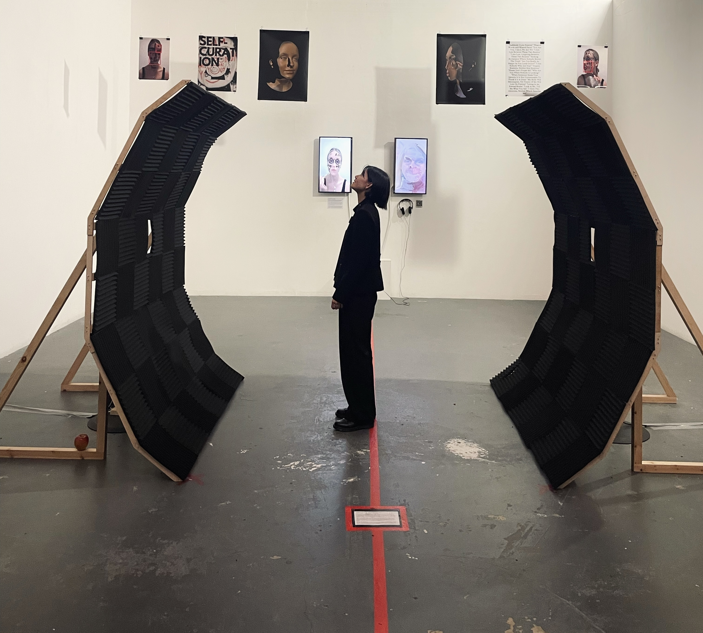

I am deeply drawn to exploring subjects that require personal courage to address, and I channel these themes into my artistic practice to convey meaningful messages. In my work, I strive to evoke an emotional experience that surpasses the act of reading or discussing a topic. Through the process of creating art, I find that my vulnerabilities are transformed into sources of strength, enabling me to take control over them.
I recently graduated from the Digital Arts Computing course at Goldsmiths, University of London. Throughout my studies, I primarily focused on creating sound-based works and installations. Through my sonic explorations, I aim to construct immersive environments that invite the audience to not only listen but also feel, recognizing sound as a profoundly physical medium.
venaur@yahoo.com
@venaurt